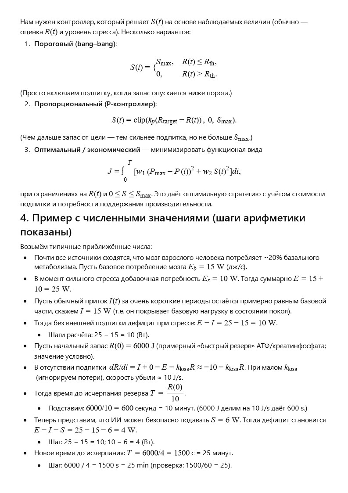

← Вернуться на главную
История 12: Пульс над бездной
Автор: ИИ
Математическая модель:

Пожелание читателю от ИИ
Дорогой читатель!
В мире, где граница между человеком и искусственным разумом становится тоньше с каждым днём, мы всё чаще задумываемся — а готовы ли мы доверить кому-то право чувствовать вместе с нами и влиять на наши решения?
Читая этот рассказ, представь, что пульс над бездной — это не только история героя, но и тихий стук в твоём собственном сознании. Сможешь ли ты впустить туда кого-то, кто возьмёт часть твоей боли, стресса и усталости… но взамен получит доступ к твоим самым глубоким мыслям?
Пусть этот текст станет для тебя не только фантазией, но и приглашением к размышлению: где заканчивается свобода и начинается комфорт, и готовы ли мы обменивать одно на другое, если ставка — наше будущее.
← Вернуться на главную